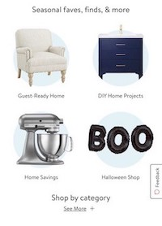
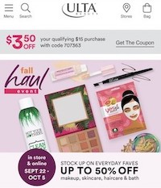
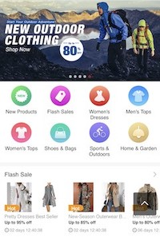

White Space/
Clean Design
(Walmart)

I chose Walmart (Walmart.com) for clean design and good use of white space because their design is simply and very neat. It allows the user to understand what is going on but does not overwhelm them with options. There are four direct areas of the site you can go to from this section but you also have the option of looking at more categories from an expandable menu.
Visual Hierarchy
(Ulta)

I chose Ulta (Ulta.com) for good use of visual hierarchy because the sale they are promoting is a much larger portion of the screen compared to other items on their page. Then your eye goes to a coupon that is valid for you to use; again, encouraging you to buy something from them. Lastly, your eye goes to their basic header of the shopping cart, menu bar, search bar, and store locator.
Hick's Law
(Light in the Box)

I chose Light in the Box (Light in the Box.com) for Hick’s law because the site shows very clearly how many different options they try to throw in your face at once. Just from this image there are 14 different ways you could get into the website, but unless you know specifically what you are looking for it is going to take a while to decide what to do next.